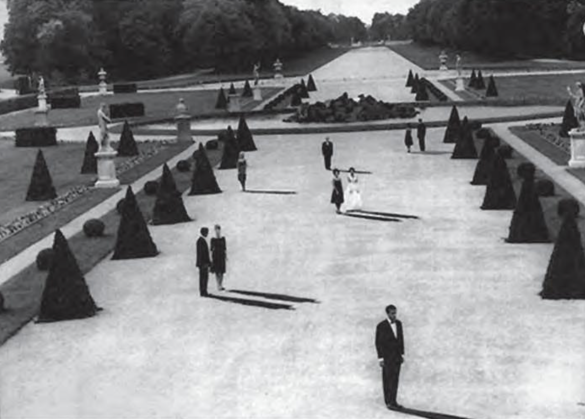
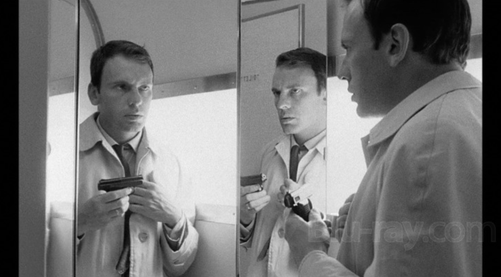

Esta corriente también conocida como la de “los del ala izquierda”, es complicada, porque buscaban llevar al cine a un nuevo nivel en cuestión de la forma de contar las historias, la forma tenía más importancia que la historia, como una manera nueva de hacer cine en la que se combinaba el cine, la literatura y las matemáticas; el movimiento nace de la literatura, a principios de los 60´s, los intelectuales de la época se dieron cuenta de que la estructura para narrar historias no había cambiado, y en plena revolución intelectual, algo que como el contar historias, que se ha hecho desde la mitología, y con la estructura aristotélica, permanecía, esta no se adaptaba a la modernidad.
Como respuesta a esta búsqueda nace la “Nouveau roman” (la nueva literatura), como una forma de revolución, con novelas como “Rayuela” de Julio Cortázar de 1963, un libro que se puede leer en cualquier orden y tiene concordancia la historia; o en España con Unamuno crea la obra “Niebla” que es pionera en el formato de la interactividad en la narrativa. Los principales representantes son Marguerite Duras, Alain Robbe, y Alain Resnais, quienes tienen un enfoque en la memoria, el tiempo, la forma en la que se construye, el orden (puede ser con ecuaciones), y la interactividad; las nuevas propuestas vienen de agrónomos, filósofos, matemáticos, trayendo con ellos distintas perspectivas para entender el discurso.

